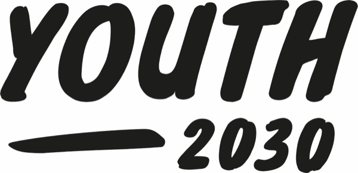

Unga får synas men inte bestämma
De är med i bilder, panelsamtal och kampanjer men saknar inflytande över beslut, budget och strategi.
Representation är inte samma sak som makt
Youthwashing händer när unga får synas, citeras eller användas som symboler utan att få påverka besluten bakom fasaden.
Definition
Youthwashing är när företag, myndigheter eller organisationer använder unga människors språk, estetik eller engagemang för att verka moderna och lyhörda, utan att dela verkligt ansvar, budget eller beslutskraft.
Synlighet kan vara värdefullt, men den räcker inte. Frågan är om unga bara får vara ansikte utåt, eller om deras perspektiv faktiskt förändrar riktning, prioriteringar och resultat.
Snabb diagnos
De är med i bilder, panelsamtal och kampanjer men saknar inflytande över beslut, budget och strategi.
Organisationen pratar om framtid och delaktighet, men samma personer har fortfarande all makt.
Unga människors frågor paketeras som image utan långsiktigt stöd till arbetet som redan pågår.
Från symbol till inflytande
Testa ett eget exempel
Beslutskraft kräver ja på mandat och resurser. Medskapande kräver ja på timing och minst delvis på mandat. Samråd betyder att unga får ge synpunkter i någon form. Varje ikryssad varningssignal flyttar placeringen ett steg ned. Det är ett grovt riktmärke, inte en bedömning.
| Kriterium | Exempel A | Exempel B |
|---|---|---|
| Nivå | ||
| Timing | ||
| Mandat | ||
| Resurser | ||
| Återkoppling | ||
| Varningssignaler |
Gör bättre
Frågorna finns också som utskrivbart arbetsblad för workshop, och som konstruerade exempel från skola, förening, företag och kommun.
Fortsätt läsa

Arbetar med ungas inflytande, lokala ungdomsråd och demokratiskt deltagande.
Läs mer om Sveriges UngdomsrådGer unga möjlighet att organisera sig kring barns rättigheter, rättvisa och påverkan.
Läs mer om Rädda Barnens Ungdomsförbund
Fokuserar på ungas deltagande i samhällsfrågor, beslut och framtidsfrågor.
Läs mer om Youth 2030 Movement